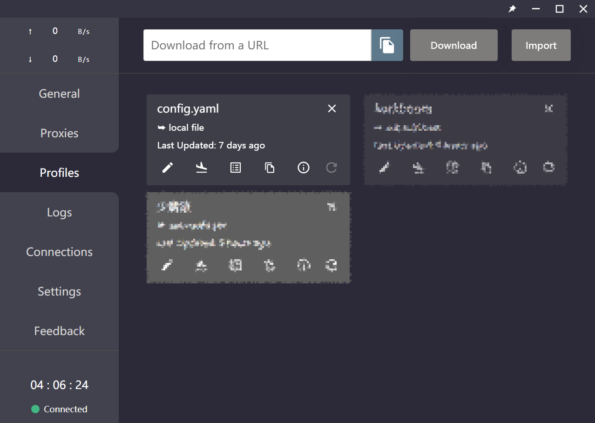
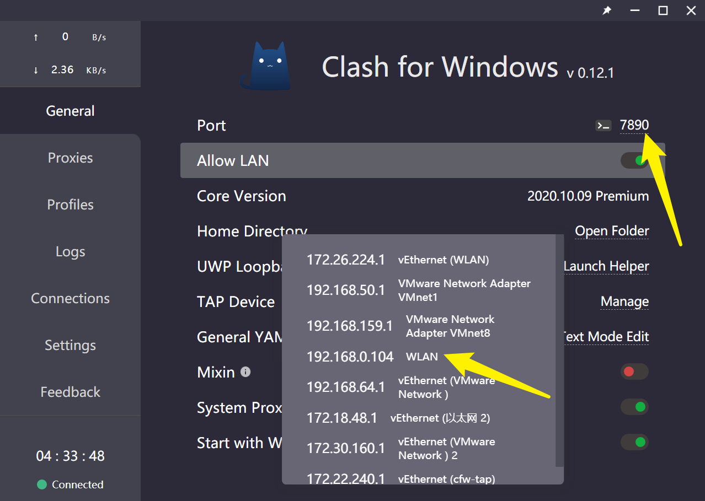

Clash for Windows 使用指北
本文最后更新于：2022年3月23日 晚上
一、简述
学习计算机不得不说科学上网是刚需了，很多专业上的东西还得谷歌才能解决~
最近了解到 Clash ，大概就是当前来说比较主流的科学上网方式吧，然后我就从 SSR 换到了 Clash 。
以我个人的理解，像 SS、SSR、v2ray、clash 这些应该都属于协议，只不过作为这方面的小白，我们一般接触到的都是实际应用了这些协议的软件，所以很容易理所当然的认为这些名词是指不同的科学上网软件。
本文仅包含我个人使用 Clash 的一些记录，不提供任何科学上网相关途径，也不介绍具体原理（好吧，其实我自己也不懂🤣）。
首先，我主要是在 Windows 平台上使用 Clash ，前面已经提到 Clash 是一种协议、规则，其在不同的平台上都有相应实现的应用软件。
以 Windows 平台为例，其在 Windows 上的软件为 Clash for Windows 。
Clash for Windows：https://github.com/Fndroid/clash_for_windows_pkg
二、上手
大概是出现不算太久的新东西，所以目前 Clash 核心以及对应的这些应用软件都在频繁的更新，直接下载最新版本安装即可，也比较推荐安装新版本~
此时此刻的最新版本是 0.12.1 ，主界面如图：
首先第一步需要导入规则，也就是上图左侧的 Profiles 栏，点击后可以看到只有一个默认的 config.yaml ，当然这个配置文件也并没有什么内容，仅仅是直连或者拒绝连接；我们需要做的是导入自己的配置文件，一般都会有订阅链接，将订阅链接粘贴到上方编辑框中，然后点击右侧的 Download 按钮即可下载并导入配置文件，或者也可以点击 Import 按钮手动导入下载好的配置文件。

可以看到每一个配置文件都有几个可以点击的按钮，是的，进一步的可以修改配置文件、修改策略、修改规则等，没特殊需求的话也没必要去改。并不是添加后的每一个配置文件都会使用到，只有一个配置文件会以不同的颜色显示，表示这个配置文件为当前正在使用的配置。
添加了配置文件后，就可以选择节点进行使用了，点击左侧的 Proxies ，即可选择不同的代理节点，有几个默认项需要明确：
- Global 即全局代理，所有的连接不加判断都走代理；
- Rule 即按规则走代理，这大概也是 Clash 最大的亮点，当然也更加进阶一些；
- Direct 即直连，不走代理；
- Script 也属于进阶操作，可以实现更加复杂的功能。
比较常用的是 Rule ，按规则走代理，也就是国内的网站没必要走代理，针对性的有需要的网站才走代理。
选择好代理节点后，还需要回到常规设置中开启系统代理，即打开 System Proxy ，没啥意外的话这就已经可以用了~
三、更进一步
这里简单说几个略微进阶的设置：
1、重度使用当然把跟随系统启动打开好啦，打开常规设置中的 Start with Windows ；
2、打开常规设置中的 Allow LAN 可以开启透明代理，也就是开启后局域网内的设备都可以使用代理，比如连接同一个 WiFi 的手机只需要在 WiFi 设置中设置代理服务器即可。如下图所示，笔记本电脑一般是 WLAN 所对应的 IP 地址（如图192.168.0.104），端口默认为7890；

3、在我实际的使用中，开启代理后国内的一些网站反而打不开了，比如我学校的官网，具体原因我并不是很明白，总之关掉系统代理就可以了。当然还有一个一劳永逸的办法就是设置绕过系统代理，点击左侧的 Settings 项，找到 Bypass Domain/IPNet 点击右侧 Edit ，照葫芦画瓢地添加自己需要绕过代理的 IP 或域名即可，支持使用通配符 * ，比如将所有 .cn 的域名绕过代理就可以设置 - "*.cn" 。（还有更好的办法请参考最后一个板块）

四、自定义规则
刚开始使用 Clash 的时候，挺不适应的，主要一点就是开启代理后似乎很多国内网站都不能访问，添加 Bypass 虽然能解决问题，但一方面很麻烦，另一方面像有些软件，不知道 IP 或者域名就没法添加到 Bypass 中，也就只能临时关闭系统代理了，体验并不太好。
而实际上此前一直使用的 SSR 有一个功能就是自动更新 PAC 规则，使用起来基本上就是很无感，开启后就不再需要设置什么了，挺好用的，说实话我确实好奇过 Clash 应该也有类似的东西吧？
两天前我就在网上搜了一下“Clash 规则”，然后就搜到了这个东西👉

Clash Premium 规则集：https://github.com/Loyalsoldier/clash-rules
点进去看了看，大概就是自己需要的东西了，先上手试试再说~
说实话起初还真不知道该怎么玩，说明文档有些地方对我这种小白还是有点不太友好的样子，好在是折腾了一天总算是用上了。
确实解决了前面所说的问题，国内网站基本可以按规则不走代理了，并且规则集可以自动更新，设置之后基本就不用再管它了。
首先需要注意的是，使用这个规则集必须确保使用 Clash for Windows 0.12.1 或以上版本，是的，涉及到了新添加的功能，前面我也说到了建议用最新版本，因为 Clash 核心以及应用软件都在频繁的更新中。
具体在 Windows 上的配置步骤基本参考说明文档没问题，简单说就是在软件的配置文件中添加 rule-providers 和 rules 。
软件的配置文件可以在常规设置中找到 General YAML ，点击右侧的 Text Mode Edit 进行编辑，未经修改的默认内容大致如下：
mixed-port: 7890
allow-lan: false
log-level: info
external-controller: '127.0.0.1:9090'
secret: ''
ipv6: false
# Will be ignored after profile selection
proxies:
- name: Debug
type: socks5
server: 127.0.0.1
port: 1080
proxy-groups:
- name: Proxy
type: select
proxies:
- Debug
rules:
- MATCH,DIRECT具体添加步骤参考说明文档：https://github.com/Loyalsoldier/clash-rules/blob/master/README.md
这里简单说几个小白可能看起来比较头疼的地方：
- 直接复制添加
rule-providers和rules，默认配置已经有rules项，把其中的内容替换掉； - 删除所有带
PROCESS-NAME的行，在 Clash for Windows 中无效； - 默认配置中没有
PROXY项，说明文档中让自行在proxies或proxy-groups中配置一个name为PROXY的 policy ，其实我不太懂怎么配置，考虑到默认的Proxy项并没有使用，所以我的解决办法就是直接把原有的Proxy修改为PROXY即可。
最终的配置文件将会是这样的：
mixed-port: 7890
allow-lan: false
log-level: info
external-controller: '127.0.0.1:9090'
secret: ''
ipv6: false
rule-providers:
reject:
type: http
behavior: domain
url: "https://raw.githubusercontent.com/Loyalsoldier/clash-rules/release/reject.txt"
path: ./ruleset/reject.yaml
interval: 86400
icloud:
type: http
behavior: domain
url: "https://raw.githubusercontent.com/Loyalsoldier/clash-rules/release/icloud.txt"
path: ./ruleset/icloud.yaml
interval: 86400
apple:
type: http
behavior: domain
url: "https://raw.githubusercontent.com/Loyalsoldier/clash-rules/release/apple.txt"
path: ./ruleset/apple.yaml
interval: 86400
google:
type: http
behavior: domain
url: "https://raw.githubusercontent.com/Loyalsoldier/clash-rules/release/google.txt"
path: ./ruleset/google.yaml
interval: 86400
proxy:
type: http
behavior: domain
url: "https://raw.githubusercontent.com/Loyalsoldier/clash-rules/release/proxy.txt"
path: ./ruleset/proxy.yaml
interval: 86400
direct:
type: http
behavior: domain
url: "https://raw.githubusercontent.com/Loyalsoldier/clash-rules/release/direct.txt"
path: ./ruleset/direct.yaml
interval: 86400
cncidr:
type: http
behavior: ipcidr
url: "https://raw.githubusercontent.com/Loyalsoldier/clash-rules/release/cncidr.txt"
path: ./ruleset/cncidr.yaml
interval: 86400
lancidr:
type: http
behavior: ipcidr
url: "https://raw.githubusercontent.com/Loyalsoldier/clash-rules/release/lancidr.txt"
path: ./ruleset/lancidr.yaml
interval: 86400
# Will be ignored after profile selection
proxies:
- name: Debug
type: socks5
server: 127.0.0.1
port: 1080
proxy-groups:
- name: PROXY
type: select
proxies:
- Debug
rules:
- RULE-SET,reject,REJECT
- RULE-SET,icloud,DIRECT
- RULE-SET,apple,DIRECT
- RULE-SET,google,DIRECT
- RULE-SET,proxy,PROXY
- RULE-SET,direct,DIRECT
- RULE-SET,lancidr,DIRECT,no-resolve
- RULE-SET,cncidr,DIRECT,no-resolve
- MATCH,PROXY保存后软件会自动加载设置，不出意外的话软件会自动下载 rule-providers 中配置的规则文件，保存在配置文件根目录下的 ruleset 文件夹中，这里可以自行验证一下，在常规设置中找到 Home Directory ，点击右侧 Open Folder 可以直接打开配置文件根目录。成功下载规则文件将会是下图这样：

如果没能下载下来，可以尝试替换链接，规则集的说明文档中有相关说明。
大概就已经可以正常使用了，可以自行测试一下。这里很尴尬的一点是，有没有配置成功似乎只能实际去访问一些网站试试，软件本身不会有任何提示……
接下来，就没有接下来了，愉快的使用吧ヾ(≧ ▽ ≦)ゝ
五、懂哥
Clash for Windows 默认为英文，也不支持修改语言，英文不太好或者非相关专业的同学可能很多地方都看不懂，不过有开发者特意开发了中文汉化补丁~
Clash_Chinese_Patch：https://github.com/BoyceLig/Clash_Chinese_Patch
下载对应版本并替换就好了，操作起来没什么难度就不细说了！
本站所有文章除特别声明外，均采用 CC BY-SA 4.0 协议 ，转载请注明出处！